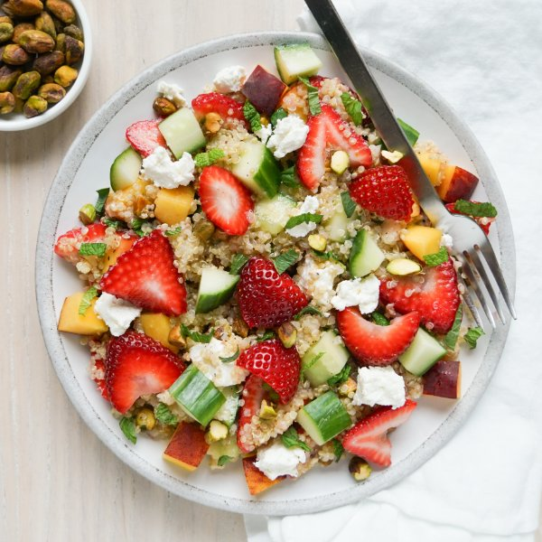

Strawberry-Peach Quinoa Salad with Cucumber, Goat Cheese & Pistachio

Total Time
35 min
Nutrition (per serving)
564.3 kcalCalories
18.2 gProtein
56.7 gCarbs
32.2 gFat
Full nutrition table
| Calories | 564.3 kcal |
| Total fat | 32.2 g |
| Saturated fat | 7.5 g |
| Trans fat | 0.2 g |
| Cholesterol | 13 mg |
| Sodium | 114.9 mg |
| Carbohydrates | 56.7 g |
| Fiber | 10.3 g |
| Sugars | 19.1 g |
| Protein | 18.2 g |
| Potassium | 777.4 mg |
| Calcium | 138.5 mg |
| Iron | 5.3 mg |
| Vitamin A | 400.3 IU |
| Vitamin C | 85.8 mg |
| Vitamin D | 4.2 IU |
Cookware
Ingredients
- 1English cucumber
- 1 small pkgfresh mint
- 1 (4 oz) loggoat cheese
- 2lemons
- 2peaches
- ⅔ cuppistachios, unsalted
- 1 cupquinoa
- 2shallots
- 1 (16 oz) pkgstrawberries
- black pepper
- extra virgin olive oil
- salt
Steps
- In a medium saucepan, combine quinoa, water, and salt; bring to a boil. Reduce heat to a simmer, cover, and cook for 15 minutes. Remove from heat and let stand, covered, for 5 minutes.1 cup quinoa
2 cup water
½ tsp salt - Meanwhile, wash and dry the fresh produce.2 lemons
1 (16 oz) pkg strawberries
1 English cucumber
2 peaches
1 small pkg fresh mint - Zest and juice lemons into a large bowl.
- Peel and mince shallots. Add to the bowl with the lemon along with oil, salt, and pepper. Whisk to combine the dressing.2 shallots
¼ cup extra virgin olive oil
½ tsp salt
½ tsp black pepper - Trim and slice strawberries lengthwise into ¼-inch thick pieces. Add to the bowl with the dressing.
- Trim and medium dice cucumber. Add to the bowl.
- Quarter peaches lengthwise (around the pit); twist quarters to separate, then remove and discard pits. Medium dice the flesh and add to the bowl.
- Pick mint leaves off the stems; discard stems and roughly chop the leaves. Add to the bowl.
- Roughly chop pistachios and add to the bowl.⅔ cup pistachios, unsalted
- Crumble goat cheese into the bowl and set aside.1 (4 oz) log goat cheese
- When the quinoa is done, transfer to a large baking sheet pan. Spread out in an even layer and let cool for 5 minutes. Once cool, add to the bowl and stir to combine the salad.
- To serve, divide the salad between plates or bowls. Enjoy!